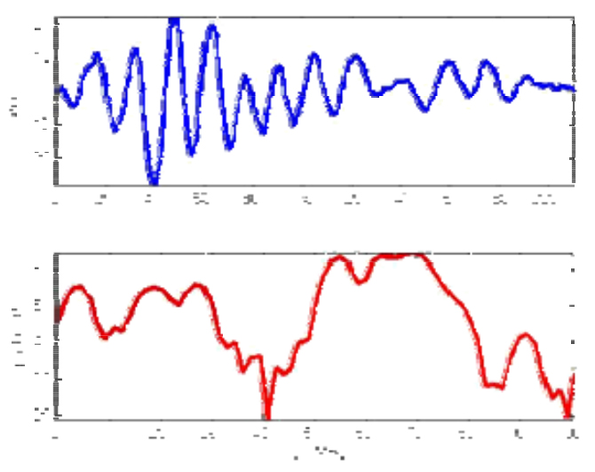
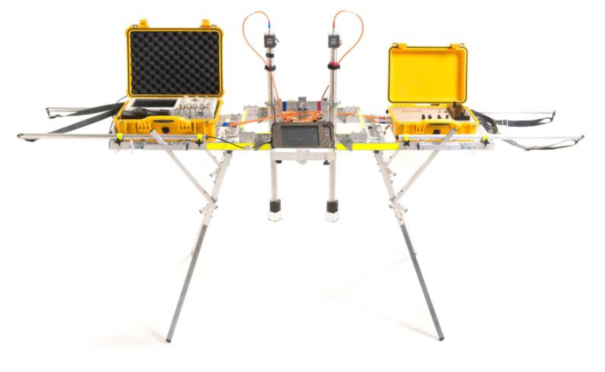
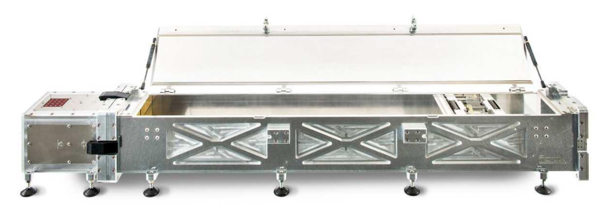
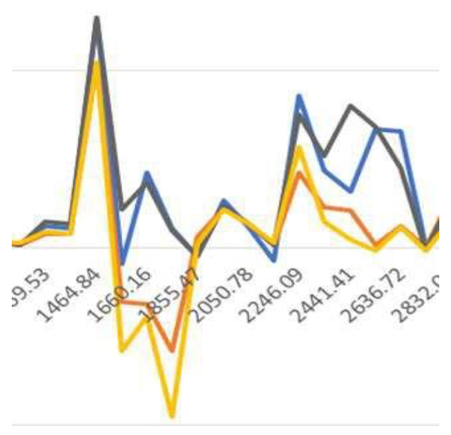
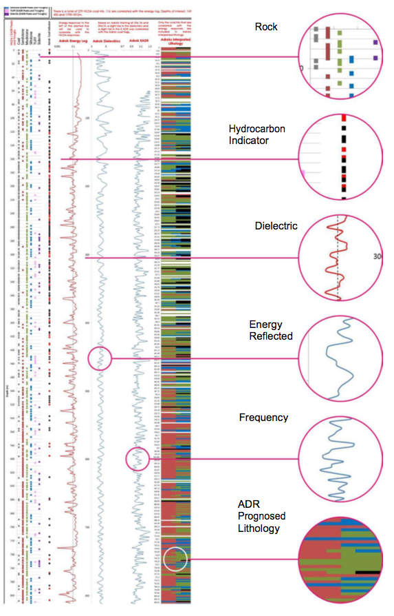

Dragging Onshore and Offshore Exploration into the Quantum Age: using novel electromagnetic technology
Gordon Stove Adrok, Edinburgh, UK
Introduction
Although available to the market for over four years, Atomic Dielectric Resonance (ADR) technology is viewed with skepticism by industry geophysicists, many of whom erroneously dispute the systems depth penetration based on an incorrect application of the skin depth concept derived from Maxwells equations for planar waves in a conductor. Because the geophysical profession is looking for analytical as well as empirical results, the presentation of positive field- results has unfortunately not appreciably resulted in new business for Adrok in the Oil Industry, in particular. (Adrok has grown rapidly in the Mining Industry, by contrast, over the past few years.) Notwithstanding, Adrok has performed a number of onshore Exploration and Appraisal projects for a number of different Oil Companies.
This contribution will discuss the technology in more detail as well as present a number of case studies by way of empirical evidence of the technology’s efficacy in Exploration and Appraisal activities.
Forward Model
Adrok has developed a Forward Model in collaboration with the University of British Columbia. In theoretical modelling and empirical field measurements, Adrok have observed that the high frequencies of its transmission pulses into the ground were found to penetrate very little, but the low frequency component had very low losses. Results were analyzed to estimate the skin depth and interpreted in terms of a constitutive model incorporating Maxwell’s equations with conductivity and polarization losses.
In a separate experiment we successfully detected the reflection of the radar pulse from a body of water through 350m of rock. A numerical simulation of the model confirmed that these results do not contradict theoretical expectations. The directional radar pulse was emitted and recorded using equipment provided by Adrok Ltd (Stove et al., 2012). We recorded the pulse in air and show its temporal and spectral shape in Fig 1. The dominant frequency components are between 1MHz to 100MHz. We verified the directionality of the pulse by additional measurements in air.
 Fig 1. Transmitted ADR pulse and its power spectral density.Virtual Lithological Logs
When surveying for minerals, oil and gas, companies will more often than not employ the staple methods of seismic and physical sampling, such as drilling. In recent years Adrok has been undertaking work with industry partners to explore different areas of the planet in an environmentally friendly way seeking to make the technology available on a global scale to search for hydrocarbons and general lithology.
Field surveys using ADR (Fig 2.) can be carried out in a much shorter timescale than conventional methods and the results are made available after processing at Adrok’s Headquarters in Edinburgh, UK. This utilises the Adrok ‘Virtual Bore’ techniques whereby the information from the field surveys is captured, usually with several sites of interest being scanned in a single day. Processing of the field data is the more time consuming aspect of the procedure. However, if one considers that for a virtual bore of greater than 1000 metre depth the time to completely analyse the results might be two weeks or slightly more, this compares very favourably with other techniques.
In the field, four main types of field survey are conducted WARR Scan, P-Scan, WARR stares and stare scans. The tracked WARR files are used to rectify depths along the survey section these can be used to rectify the stares. These Scans exist in a TIME domain but by using proprietary software the image can be rectified into a SPACE domain. FFT analysis can be carried out in both domains yielding energy, frequency and phase results but it is important to realise that frequency on a time domain image is measured in cycles per second (Hz) whereas frequency on a space domain image is measured in cycles/m. The time domain image is used in the to produce spectral lines and other spectral statistics such as range and reflectivity, all of which help to classify/ identify lithological units or mineral and rock types. The space domain image can provide useful spectral statistics for identifying structural features such as faults, fractures and fissures.
The ADR signal generator produces a pulse of Electromagnetic energy (frequencies range between 1MHz to 100MHz) that is fed to the transmitting antenna. The transmitting antenna conditions the signal for propagation into the ground. Once the signal has been sent to the transmitting antenna a signal is sent to the receiving control unit to synchronise collection of the subsurface reflected data, which is collected through the receiving antenna from different subsurface rock layers and mineral structures. The receiving control unit collects the signal from the receiving antenna and converts it into a form that can be read and stored on the data logging computer.
The data logged in the field are then returned to the Adrok’s Processing Centre for analysis. After the datasets are quality controlled they are ready for processing. Processing involves two major steps; the first is to conduct WARR analysis to produce depth information from the time registered image. Secondly, the image is split into equal sub-layer components where it can be spectrally compared to the database of materials.
The ADR technology measures subsurface (a) dielectric permittivity including moisture content; (b) spectral lines including spectral statistics (energy, frequency and phase); (c) material resonance; (d) material reflectivity and (e) density and hardness indices; (f) estimates of grain size as an estimate of porosity (g) most importantly range or depth (with precision which is qualified with an error factor for each layer tracked) of each material layer identified or classified from time zero at ground level, without physically boring the ground. These electrical measurements produce what has been dubbed “Virtual Boreholes”.
ADR can be trained on known geology to build up a reference database against which to correlate data collected from new, unknown locations. To this end a test chamber has been constructed that is portable and so can be taken to different sites around the world (Figure 3). The low energy wave forms have the ability to penetrate solids and return information from the interior of materials, rather than merely gleaning information from the surfaces of solids.
A variety of measurements can be made, which when taken together should give a specific signature for the material under investigation (“Spectroscopy”). Spectral lines are produced at the atomic scale, and can be used to identify the material composision of any medium capable of transmitting a beam of light (in this case a lased ADR beam of radiowaves and microwaves). They result from the interaction at the quantum scale between radiowave and microwave photons in this coherent beam and atoms or molecules of rock layer materials. Such measurements include Spectral Line analysis, ADR Resonant Energy Ratio and the ADR Energy Gamma method, a sample of the latter is shown in figure 4. This figure shows differences in ADR E-Gamma amplitudes at different frequencies (MHz) of a variety of rock types - Calcite, Galena, Marcasite and Sphalerite. Using Spectroscopic techniques in this way different rock types can be classified and re-identified in new locations in the field
When combining Spectroscopic classifications of materials in the laboratory with data collected in the field, a powerful interpretation can manifest. In the laboratory and in the field, the ADR scanners transmit pulses of radiowaves in the Time Domain (measured in nanoseconds). The returns are also measured in Time and can be analysed in terms of the returned Energy, Frequency and Phase responses from the ground from the interaction of the transmitted pulses of radiowaves back to the receivers on the ground surface.
The output from the processing gives information in a lithological form showing Energy Log, Dielectrics and Energy ADR, an example is shown in Fig. 5.
 Fig 2. ADR Field Scanner System  Fig 3. ADR Laboratory Spectroscopy Training System  Fig 4. ADR Spectral Lines based on energy v’s frequency measurements (“Spectroscopy”) Conclusions
The results from experiments and commercial field surveys, as well as the numerical model simulation suggest that the exploration depth of pulsed radar can be increased significantly by including a low frequency component. Our data suggests the high losses of Ground Penetrating Radar (GPR) in the 10 - 1000MHz range are due to polarization effects, rather than conductivity losses. The conductivity we found to be consistent with our data was 0:075mS/m. It would be desirable to confirm this value with independent measurements. Values for limestone conductivity reported in the literature vary widely, for example (Telford et al., 1990) quotes a range of. 10-7 -2 x 10-2S/m. The actual value depends on complicated and not fully understood details of how pore water is embedded in the rock, and which solvents are present in the solution. See for example Revil (2013).
For example Schӧn (2004) quotes values from s = 10 2S/m (wet) to s = 10 5S/m (dry) with permittivity values of er = 11 (wet) to er = 6 (dry). This suggest a rather low water content of the rock in our study. This suggests a rather low water content of the rock in our study. If these results hold for other rock types, deeply penetrating radar scanning can potentially become an attractive geophysical exploration technique in selective environments where there is no highly conductive near-surface layer, or where this layer is thin enough to penetrate. We believe that these experiments are encouraging and warrant further investigations.
Just because there is skepticism around new breakthrough technologies in the Oil Industry does not mean the ideas won't be accepted. EMGS' initial survey results off West Africa were initially received skeptically, and after a few repeat surveys, people began to think they might have something. It took time and explaining, and published test surveys over a number of targets. (Exxon had patented similar technology 10 years before EMGS, but let their patents lapse because they could not see the potential in it.) Airborne gravity and gravity gradiometry also took a while to be accepted. Gradiometry was invented by the US Navy, but even with the credibility of that organization behind the technology, time was needed to demonstrate how to use it in oil and then mineral exploration. Again, it was repeated test surveys that tipped the balance.
Given that Adrok have now presented repeated test and commercial surveys, is the balance of belief now beginning to tip?